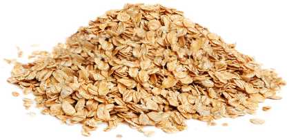
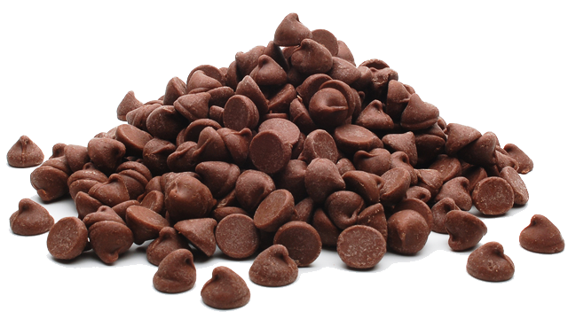
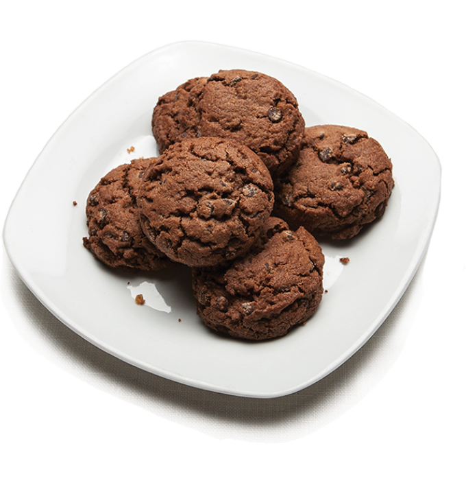
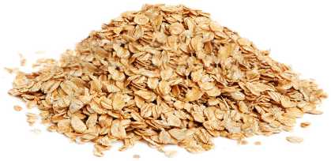
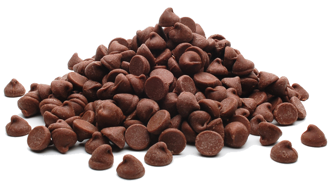
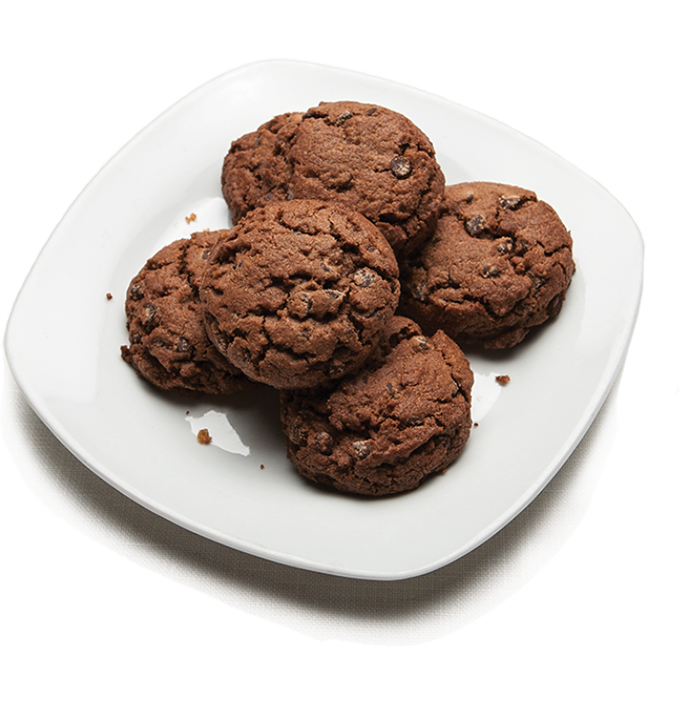

| Steps | Instructions | Pictures |
|---|---|---|
| 1 | Pour 1 cp of oates into a large mixing bowl. |
 |
| 2 | Peel bananas and use large fork to mash two bananas in a bowl until you get the desired consistency, or thickness. |
|
| 3 | Customize by mixing in 1/2 cp of your choice of other dry ingredients. |
 |
| 4 | Place spoonfuls of dough on greased cookie sheet and bake at 350° for 12 minutes. |
 |